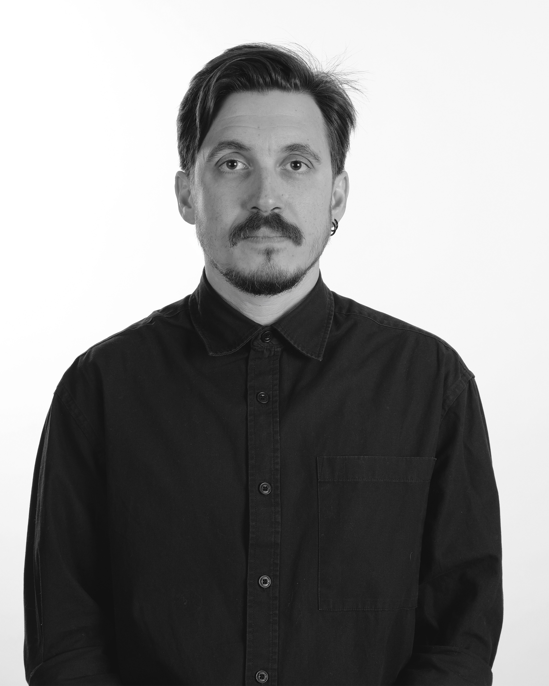

About Me
Hello! I'm Doruk Türkmen, a designer and academic working on the intersection of interaction, play, and meaning.
I work as an Assistant Professor in the Department of Visual Communication Design at Yaşar University, İzmir. Some courses I teach include Interaction Design Studio, Digital Game Design, Generative AI and Ethics in Design Practice, and Design Methodologies and Ethics.
My current research is focused on emergent meaning in interactive systems, particularly games and playful artifacts. My PhD dissertation explores the design of role-playing games in the context of archaeology museums.
Get in Touch
